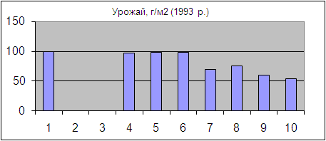
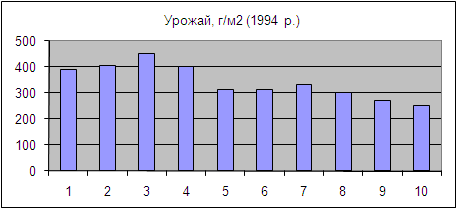
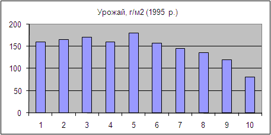

Сочевиця слабо конкурує з бур’янами, а також відзначається високою чутливістю до більшості гербіцидів тому оптимальним є проведення боротьби з бур’янами в попередні роки, на протязі ротації всієї сівозміни. Так після збирання попередньої культури при підготовці поля можна вносити гліфосат, та як більш дешевшу альтернативу 2,4 Д. Якщо поле сильно забур’янене, посів можна дещо відкласти гліфосат можна застосувати і перед посівом за 2-3 тижні.
Арсенал гербіцидів які можна застосувати на посівах сочевиці для боротьби з дводольними бур’янами досить обмежений. Єдиний гербіцид який рекомендований виробником для застосування на сочевиці в Україні – Гезагард (прометрин). Проте існує також ряд гербіцидів, які в Україні не зареєстровані для застосування на сочевиці, проте їх успішно використовують для боротьби з бур’янами на сочевиці в інших країнах.
Ці препарати можна розподілити на 2 групи до сходові і після сходові.
До сходові гербіциди
Стомп (пендиметалін) 3-6 л/га рекомендований для застосування на сочевиці в США, Австралії, Індії, Туреччині. Одним із його плюсів є мала рухливість у ґрунті відповідно і невеликий ризик в наслідок промивання гербіциду в нижні шари ґрунту під час сильних дощів. Проте він мало ефективний проти злакових бур’янів. Залежно від інтенсивності забур’янення існує висока вірогідність внесення страхового гербіциду після сходів сочевиці. Не рекомендується також вносити велику дозу коли планується сівба озимої пшениці на протязі 6 місяців після внесення гербіциду.
Гезагард (прометрин) застосовується в суміші з гербіцидом Дуал Голд (S-метолахлор). Дана суміш в дозі 3 л/га Гезагарду і 1,6 л/га Дуал Голду досить ефективно захищає сочевицю від бур’янів. Проте можлива після дія на озиму пшеницю.
Гербіциди з діючою речовиною Імазетапір. 0,7-0,8 л/га. Досить ефективно захищають сочевицю від бур’янів, але є токсичними і для сочевиці. Особливо сильно токсичність проявляється за посушливих умов, при зменшенні ж дози внесення гербіциду знижується і ефективність боротьби з бур’янами. Крім того гербіциди даної групи мають значну післядію на послідуючі культури. Мало ефективні вони також проти таких бур’янів як вівсюг, лобода біла, пупавка вонюча, латуків.
Після сходів на сочевиці можна застосовувати наступні гербіциди
Зенкор (Метрибузин) 0,6 л/га рекомендований для застосування на сочевиці в США, Австралії, Канаді, Туреччині, застосовується рано після сходів до досягнення сочевицею 4-х вузлів. Найкращий ефект досягається коли бур’яни малі. Можливо застосування даного гербіциду розділене на дві фази. 2/3 повної дози перше внесення і через 7-10 днів повторне внесення 1/2 повної дози. Цей гербіцид дуже рухливий в ґрунті особливо після сильних дощів, тому якщо планується його застосовувати сіяти сочевицю потрібно не мілкіше ніж 5 см. Не можна застосовувати Зенкор на ґрунтах з низьким вмістом органічної речовини (менше 5 %).
Гербіциди на основі імізадолінонів (Пульсар - імазамокс, Піворт - імазетапір) рекомендовані для застосування на на сої, горосі, люцерні. Дані гербіцид є в певній мірі токсичним для сочевиці навіть при внесенні меншої від рекомендованої для інших зернобобових дози. При зменшенні ж дози внесення гербіциду знижується і ефективність боротьби з бурянами. Крім того існують дані про його післядію на інші культури.
Дослідження проведені в Канаді D.A. Wall (1993-1995 рр.), щодо застосування Імазетапіру на сочевиці мали наступні результати.
Дослід складався з таких варіантів: контроль без застосування гербіцидів, два варіанти з різними дозами гербіциду з діючою речовиною метрибузин (Зенкор): 210 г/га д.р. після сходів сочевиці, і 140/140 (два внесення по 140 г/га д.р, з переривом у 7 днів). Варіанти з застосуванням Імазетапіру мали 7 варіацій 5,10, 15, 20, 25, 50 і 100 г д.р. на гектар відповідно. На час внесення рослини сочевиці мали висоту 10 см. Таким чином автори зробили висновок, про те що результати обробки сочевиці імазетапіром непередбачувані, в окремі роки шкода може бути мінімальною, але в більшості випадків він негативно впливав на урожайність сочевиці.
На графіках нижче показано продуктивність рослин сочевиці по роках досліджень.



Рис. Результатати обробітку сочевиці гербіцидам: 1 - контроль без застосування гербіцидів; обробітки 2 і 3 - метрибузин з дозою 140/140 (дві обробки з переривом у 7 днів) і 210 г/га д.р. відповідно; 4-10 = обробітки імазетапіром в дозі 5, 10, 15, 20, 25, 50 і 100 г/га діючої речовини відповідно (Wall D.A. Lentil (Lens culinaris) and fababean (Vicia faba) tolerance to post-emergence application of imazethapyr).
Для боротьби зі злаковими бур’янами можна застосовувати більшість проти злакових гербіцидів які є в реєстрі, згідно інструкції до них.
Боротьбу з бур’янами потрібно починати чим раніше, так як сочевиця слабо конкурентна проти бур’янів, і в наслідок їх дії суттєво знижує урожай. Гербіциди краще застосовувати по можливості раніше наскільки дозволяє інструкція по їх застосуванню. Боротися з бур’янами на сочевиці є сенс доки вона знаходиться в фазі до 10 вузлів (до цвітіння). Бур’яни які появляються коли сочевиця знаходиться в стадії 10 вузлів і більше суттєво на урожай не впливають.
Сочевиця дуже чутлива до гербіцидів, якими обробляють інші культури, тому перед внесенням гербіциду на сочевиці потрібно ретельно промивати ємність для робочого розчину. Також потрібно обережно вносити гербіциди на полях які знаходяться рядом із сочевицею. Краще не проводити внесення при сильному вітрі в сторону поля з сочевицею. Так як бур’яни на сочевиці можуть бути причиною суттєвого зниження урожаю уважно поставтеся до неулаштування оприскувача. Пересвідчіться чи відповідна для застосовуваного вами препарату кількість робочого розчину попадає на площу, чи форсунки оприскувача забезпечують добре покриття, чи швидкість руху агрегату забезпечує добре покриття площі робочим розчином.
Альтернативою хімічному захисту рослин від бур’янів є боронування легкими та середніми боронами, до сходів та після сходів до поки рослини не досягли висоти 10 см. Найбільш ефективним боронування є коли бур’яни знаходяться в фазі ниточки. Боронування потрібно проводити коли грунт сухий, а рослини дещо прив’ялі в жаркі сонячні дні. Норму висіву при цьому потрібно дещо збільшити, щоб компенсувати втрату рослин під час боронування.
Назад до змісту |